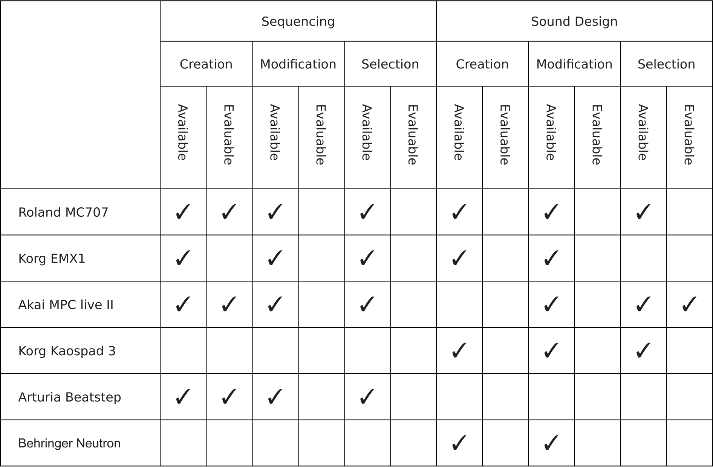

Interaction Taxonomy for Sequencer-Based Music Performances
Abstract
Sequencer-based live performances of electronic music require a variety of interactions. These interactions depend strongly on the affordances and constraints of the used instrument. Musicians may perceive the available interactions offered by the used instrument as limiting. For furthering the development of instruments for live performances and expanding the interaction possibilities, first, a systematic overview of interactions in current sequencer-based music performance is needed.
To that end, we propose a taxonomy of interactions in sequencer-based music performances of electronic music. We identify two performance modes sequencing and sound design and four interaction classes creation, modification, selection, and evaluation. Furthermore, we discuss the influence of the different interaction classes on both, musicians as well as the audience and use the proposed taxonomy to analyze six commercially available hardware devices.
Author Keywords
Sequencing, Interaction, Taxonomy, Performance, Electronic Music
CCS Concepts
Applied computing → Sound and music computing; Performing arts;
Human-centered computing → Sound-based input / output;
Introduction
Almost every contemporary music production uses some form of sequencing. Sequencers, as tools for the creation, editing, and playback of acoustic events are widely used in live performances and are often the core of electronic live setups. In these sequencer-based music performances, not only pre-composed material can be used, but also in the moment of the performance newly created musical material might be used in a form of “live sequencing”. As a definition of a sequencer-based music performance, we use the narrow understanding that a sequencer is used as the main interaction device in a live situation to edit and create musical material in real-time. Arguably in different contexts, the concept of liveness is multifaceted as Auslander [1] and Sanden [2] stated. Despite the ubiquity of sequencers in musical productions, to the best of our knowledge, there is little research on the use of sequencers in live performances. This is surprising since a sequencer-based music performance differs from other forms of musical performance. One important difference is the unique relationship between sequencing and time during a performance, which arises from the particular value of time in music.
Danneberg [3] argues “music is the presentation of sound in some form of temporal organization”. This temporal organization is - like time itself - linear. When musicians play traditional instruments the effect of their playing emerges at the same moment and in the order of their interaction with the instrument. In contrast, the interactions that musicians can perform with a sequencer are not bound to linear time constraints. The order of the interactions performed does not have to coincide with the playback order of their effects. It is possible for the musician to perform parallel interactions that result in musical effects that are in sequence. An example is the parallel activation of different steps in a classical step sequencer. Similarly, executing a linear sequence of interactions can lead to parallel musical effects.
The possible interactions depend on the chosen instrument. However, as Hardjowirogo[4] shows, there is an ongoing academic discourse about what an instrument is, and what properties an object must possess in order to be classified as an instrument. There exists a variety of models of what components an instrument consists of. This makes the definition of an instrument in a sequencer-based music performance particularly difficult. For this reason, we use the term instrument in a sequencer-based music performance as a sound generator where the interaction is mainly done with a sequencer. Based on this definition of an instrument, we define the musician as the person who directly interacts with the sequencer which is, in turn, the interface of the instrument.
The unique relationship to time and the functioning of a sequencer result in different interaction possibilities in sequencer-based music performances, which vary in their complexity and consequently in their perception by the musician and the audience. The number of interactions necessary to create a musically meaningful effect is of particular importance in the time-critical environment of a live performance. Therefore, the number of interactions necessary to achieve a musically meaningful effect, described in the following as complexity, is used as a measure to evaluate the identified forms of interactions.
For a better understanding of the interactions in a sequencer-based music performance, we make the following contributions. First, we need to identify which forms of interactions can be found in a sequencer-based music performance. Secondly, we translate the identified forms of interaction into a meaningful taxonomy. Finally, we discuss the influence of the identified forms of interaction on the perception of the live performance by both the audience and the musician must be investigated.
Related Work
As mentioned in the introduction, research about the central musical device of sequencer-based music performance, the sequencer, appears to be rather limited. As an exception, Duigan at al. [5] propose a taxonomy for sequencer interfaces based on the factors of the utilized medium, the point of linearisation, the abstraction level, the event ordering, and the application. This taxonomy purely focuses on the sequencer itself and does not put the sequencer in the context of a live performance.
Reeves et al. [6] propose a taxonomy of live performances from the perspective of human-computer interaction (HCI). The authors classify interactions based on the audience's perceptibility of the performer's interactions in conjunction with the effect of those interactions. Following the arguments of Croft [7] that “[…] we expect a meaningful relationship between what we see the performer do and the sound that this action generates” and similarly, Emmersons [8] statement that “we expect a sound proportionate to the energetic characteristics of the performer’s action“ this seems to be a quite fitting approach to classify interactions in a live performance. In comparison, the taxonomy we propose does not focus on the audience's perception but on the interactions themselves, offered by the used instrument in live performances.
McDermott et. al.[9] point out that difficulty in playing an instrument is not always negative, but can also be a desirable characteristic e.g as a trigger for creativity. He defines a variety of dimensions of difficulty. We take up this thought and examine some of the forms of difficulties the author classifies, in particular the difficulties of accuracy and coordination, that are inherent in certain forms of interaction and discuss their effects on the perception of the musician and the audience.
This paper bridges the gap between research on HCI in live performances and research on sequencers by proposing a taxonomy of interactions in sequencer-based music performances. The results presented in this paper are based on theoretical analysis on the specifics of the interactions in sequencer-based electronic live music performances. Furthermore, also observations of the personal performance practices of the authors are considered.
Performance Modes
To identify the interactions that musicians can perform live, we need to understand the domain in which musicians are interacting with. Therefore, we summarize Mazzola’s description of music on the level of its basic building blocks presented in “Geometrie der Töne” [10].
Marzzola defines music at its lowest level as a set of air pressure fluctuations. This air pressure fluctuation, hereafter referred to as acoustic event , must be generated by the musician during the live performance. According to Marzola, an acoustic event can be described by four properties:
- the time at which the acoustic event takes place
- the duration of the acoustic event
- the maximum amplitude of the acoustic event
- the waveform as a function of pressure over time
Those properties can be divided into two groups. The first group consisting of , , and are scalar values, which allow direct control without abstraction or transformation of the values besides value range change or quantization by e.g. mapping them to standard UI elements such as a slider.
The waveform of the acoustic event on the other hand can not be described by a single scalar value. Due to the continuous nature of direct interaction with a limited set of control elements is not possible. Instead, a transformation of to reduce its complexity is common. A typical approach to reduce the complexity of the interaction with is to extract the base frequency . Mazzola calls the resulting quadruple , , , and the geometric coordinate of an acoustic event . We define the term sequencing performance mode to describe the interaction with the geometric parameters.
It is important to note that the geometric parameters lack information about how the acoustic event sounds. They describe what is played but not how it sounds like. A description of how an acoustic event sounds like can be achieved with the remaining properties of . Due to the continuous nature of and depending on the sound synthesis method (e.g. with subtractive synthesis, FM synthesis, or sampling), a reduced set of abstracted parameters is used, which still describes sufficiently for the desired sound aesthetics and artistic goals. We introduce the interaction with the non-geometric properties of as the sound design performance mode.
In a complete sequencer-based music performance, a musician must perform both, sequencing, and sound design. The performance modes are connected and constantly influence each other but each performance mode requires its own unique set of control elements and conceptual metaphores. This is why both modes are considered separately in the taxonomy presented. In the following, we categorize possible interactions as interaction classes for each performance mode.
Interaction Classes
In addition to the two performance modes of sequencing and sound design, we identify four interaction classes:
Creation
Modification
Selection
Evaluation
The interaction classes do not necessarily all occur in every live performance. Their occurrence depends on factors such as:
the specific affordances and constraints of the used instruments,
the artistic goals of the musician,
the preferred workflow of the musician
personal skills, musical education, and experience, and
the cognitive and motor capabilities of the musician.
Between these interaction classes, there is a hierarchy in the complexity of the interactions. For example, the creation of new musical material in a live performance requires more complex interactions than the modification of existing material, which in turn requires more complex interactions than the selection of existing material.
Creation
The first interaction class considered in this paper is creation. Creation has a prominent role within a live performance. Without the creation of musical material there would be no performance. Creation is the generation and conservation of musical material during the live performance. In the performance mode of sequencing, this usually means defining the geometric coordinates of a set of acoustic events. In sound design mode creation means setting the parameters determined by the sound synthesis method used.
Both sequencing and sound design in creation mode require a significant amount of interaction to achieve a musically meaningful result. It is necessary to interact with four values to define the geometric parameters of a single acoustic event and a musical piece typically consists of a whole set of acoustic events that need to be set. This creates an N:1 relationship between the number of interactions and the desired musical meaningful effect in the creation mode and is consequently the most complex interaction class.
The creation interaction class reveals a tension between the perception of the live performance by the musician and the audience. For the musician, the complexity and accompanying difficulty of the interactions necessary to produce musical material can contribute to the perception to present virtuosity and skill. According to Wallis et al.[11], being able to present skill is an important motivating factor for musicians to play an instrument in the first place. On the other hand, the amount of interactions required, each of which has little to no perceptible effect on the musical outcome, makes it difficult for the audience to make a meaningful connection between interaction and effect.
Modification
Besides the creation in the form of the generation and conservation of musical material, the next interaction class is the modification of previously created material. The modification interaction class allows a continuous modification of the musical material during the performance.
The modification of already existing material usually requires less complex interactions than the creation of new material. Musically meaningful alterations can be achieved by controlling one parameter. On the sequencing side, this can be done by, e.g., transposing sequences. On the sound design side, the modification of the volume or filter cutoff of a synthesizer sound is an example of a modification interaction. This creates a 1:1 relationship between the interactions in modification mode and the desired musically significant event.
Selection
Another category in which interactions are found in live performances is the selection between options of generated and conserved material. This interaction class is typically used to make extensive, non-continuous changes to musical material, such as to build song structures. Examples of using selection in sequencing mode include changing a predefined pattern or muting individual tracks. Examples of selection in sound design mode include selecting a synthesizer preset or a drum sample.
This interaction mode usually requires the least amount of interactions to achieve meaningful musical effects. In fact, a number of musically significant effects can be achieved by the means of a single interaction. This results in a 1:N relationship between interaction and effect and therefore the least complex interaction class.
Evaluation
In the context of this paper, the term evaluation refers to the musician's assessment of musical material without the assessment being noticeable for the audience. In contrast to the interaction with classical instruments where possible errors can be perceived by the musician immediately, this is not possible in a sequencer-based music performance due to the decoupling from linear time. Thus, individual errors can not only result in undesirable musical outcome but also in cascades of undesirable musical effects if e.g. repetitions are based on previous misleading musical decisions. It can be argued that the importance of the evaluation mode decreases with increasing personal skills, musical education, and experience. These factors can ultimately only partially replace the need for an evaluation mode. Personal skills, musical education, and experience, and with that the ability to purposeful implement musical ideas are often helpful but not decisive for all interactions. An example is the setting of loop points in an audio sample that can not be done purposefully without a form of evaluation of the outcome. It can also be argued that it is particularly difficult in some sound synthesis methods to anticipate the outcome of an interaction due to their inherent nonlinearities, discontinuities, and parameter dependencies, and therefore they demand evaluation in a live, time-critical performance.
The evaluation of the musical material occupies a special position among the interaction class. Evaluation does not directly affect the output of musical material, but allows for informed decisions made in its creation, modification, and selection. Furthermore, evaluation is always tied to other interaction classes. In opposition to the other interaction classes, the evaluation does not stand by itself but relates to other interaction classes.
Taxonomy
Based on the previously discussed performance modes and interaction classes, in figure 1 we summarize the taxonomy of the interactions in sequencer-based music performance:

Figure 1: The taxonomy for interactions in sequencer-based music performances.
In the following, we apply the taxonomy for an exemplary analysis of a selection of hardware devices.
Example Analysis
As an example for using the proposed taxonomy for the evaluation of existing hardware, we apply it to a selection of commercially available devices that can be found in live performance setups. This selection covers a broad range of device categories that can be found in sequencer-based music performances.


Table 1: Taxonomy applied to commercially available devices for electronic music performances.
Table 1 shows that the devices Roland MC707, Akai MPC Live II, and Korg EMX 1 offer the most extensive coverage of interaction classes in both the sequencing and sound design performance mode. This is not surprising since all three devices are grooveboxes. Grooveboxes are designed to offer a complete pipeline for music production and performances independent from other devices.
For example, the Korg Kaospad 3 is a performance-oriented audio effects device and therefore supports modification and selection in sound design performance mode. In addition, the Kaospad features an audio looper. A looper is related to a sequencer but differs from this device category in its matching of the order of the interactions to the order of the output acoustic events. The Arturia Beatstep is a standalone MIDI sequencer that supports interaction for the sequencing performance mode but not the sound design mode. Lastly, the Behringer Neutron is a semi-modular subtractive synthesizer, as can be seen from the availability values of the interaction classes creation and modification in the sound design performance mode as well as the lack of any interaction classes in the sequencing performance mode. Furthermore, the lack of the selection class in the sound design performance mode indicates the absence of the possibility to save or load previously created sounds.
The overall possibility to evaluate the interaction classes is rarely available for all selected devices. With regard to the independence of temporal linearity in a sequencer-based music performance, this means that many decisions made with the mentioned devices in a live performance have to be based on educated guesses, luck, or memorization.
Conclusion
The presented taxonomy classifies two performance modes and four interaction classes in sequencer-based music performances. Based on the taxonomy, we discuss the influence of the interaction classes on a performance and consider the perception of the musician as well as the audience.
A qualitative study with musicians with the objective of identifying and verifying the performance modes and interaction classes proposed in the taxonomy would be worthwhile for further research. An extension of the proposed taxonomy to include played live instruments also seems to be a valuable objective for further research. Also the examination of the interactions in sequencer-based music performances with focus on composition would be a valuable objective for further research.
With this work, we hope to contribute to a better understanding of instruments in sequencer-based music performances and present our work as a starting point for the design of new instruments for greater musical expression.
Citations
- ↩Auslander, P. (2008). Liveness: Performance in a Mediatized Culture (2nd ed.). Routledge.
- ↩Sanden, P. (2013). Liveness in Modern Music: Musicians, Technology, and the Perception of Performance. Routledge.
- ↩Dannenberg, R. B. (2018). Languages for Computer Music. Frontiers in Digital Humanities, 5. https://doi.org/10.3389/fdigh.2018.00026
- ↩Hardjowirogo, S.-I. (2017). Instrumentality. On the Construction of Instrumental Identity. In T. Bovermann, A. de Campo, H. Egermann, S.-I. Hardjowirogo, & S. Weinzierl (Eds.) (pp. 9–24). Springer Singapore.
- ↩Duignan, M., Noble, J., Biddle, R., Biddle@carleton, R., & Ca,. (2005). A taxonomy of sequencer user-interfaces.
- ↩Reeves, S., Benford, S., O’Malley, C., & Fraser, M. (2005). Designing the Spectator Experience (pp. 741–750). Portland, Oregon, USA: Association for Computing Machinery. https://doi.org/10.1145/1054972.1055074
- ↩Croft, J. (2007). Theses on liveness. Organised Sound, 12(1), 59–66.
- ↩Simon Emmerson . (1998). Acoustic/electroacoustic: The relationship with instruments. Journal of New Music Research, 27(1–2), 146–164. https://doi.org/10.1080/09298219808570742
- ↩McDermott, J., Gifford, T., Bouwer, A., & Wagy, M. (2013). Should music interaction be easy? In Music and human-computer interaction (pp. 29–47). Springer.
- ↩Mazzola, G. (1990). Geometrie der Töne: Elemente der mathematischen Musiktheorie. Birkhäuser.
- ↩Wallis, I., Ingalls, T., Campana, E., & Vuong, C. (2013). Amateur Musicians, Long-term Engagement, and HCI (pp. 49–66). https://doi.org/10.1007/978-1-4471-2990-5_3